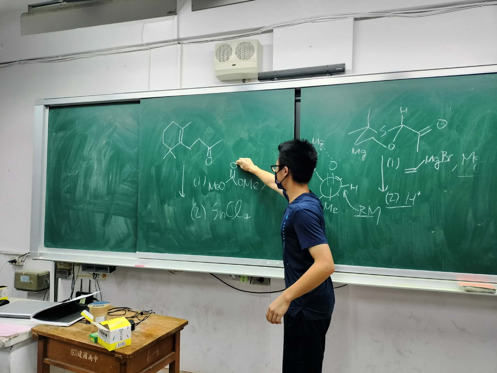
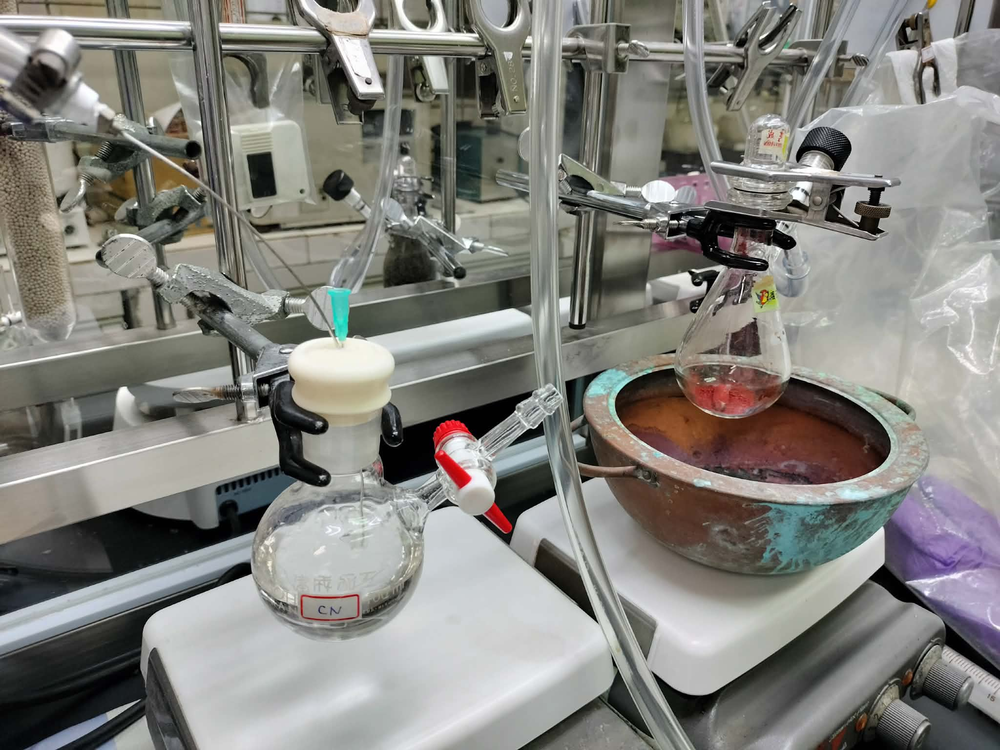
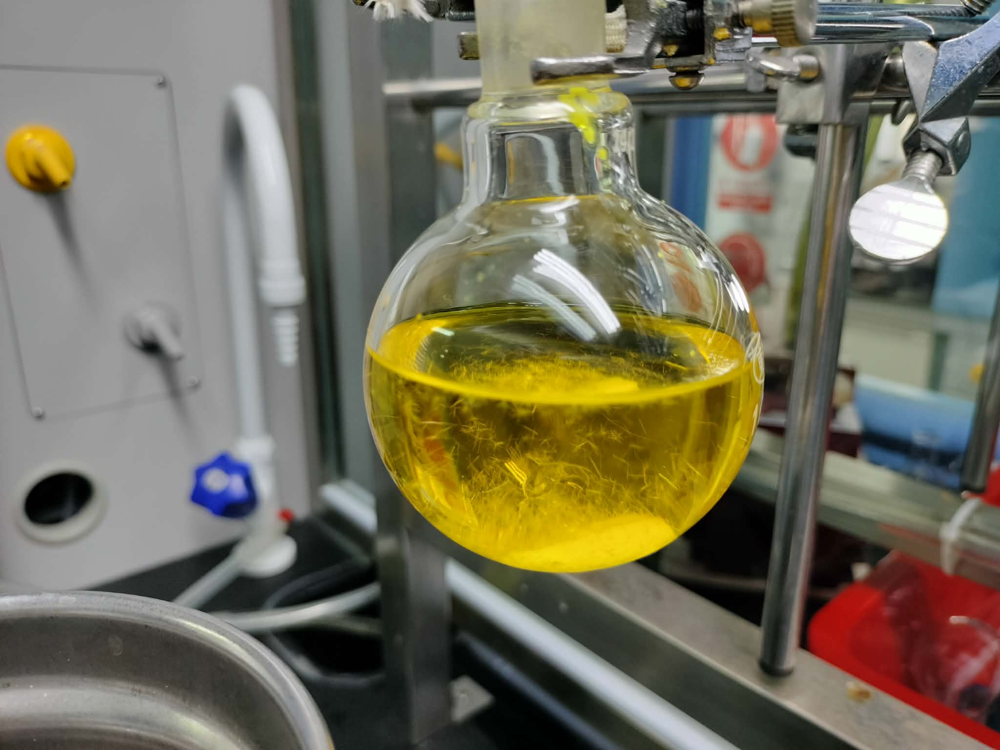
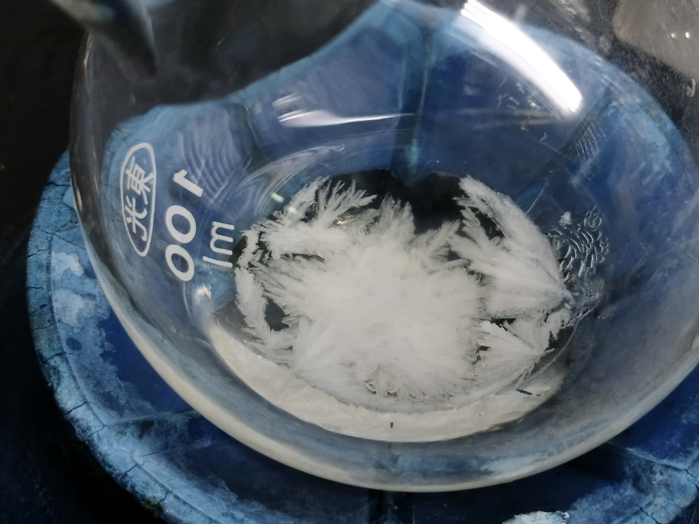
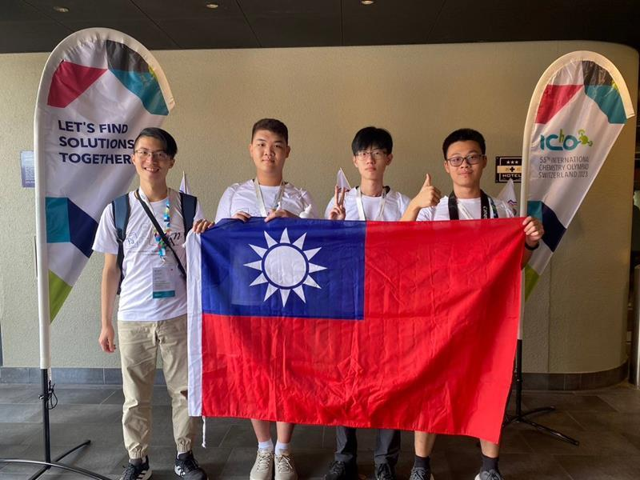
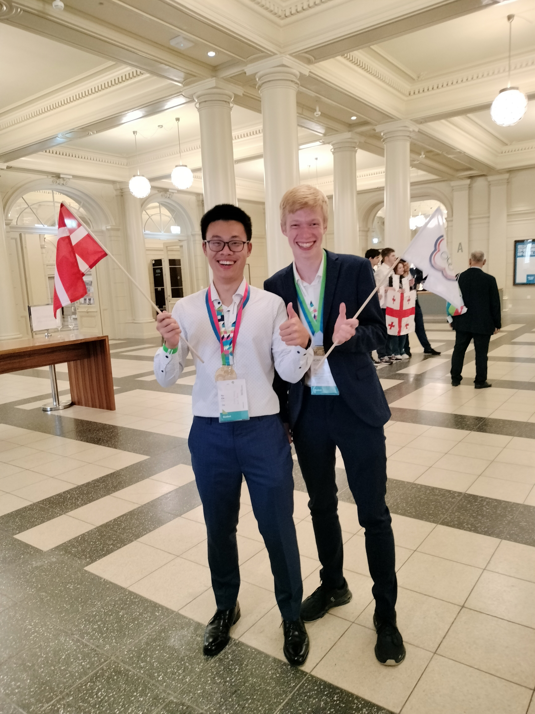
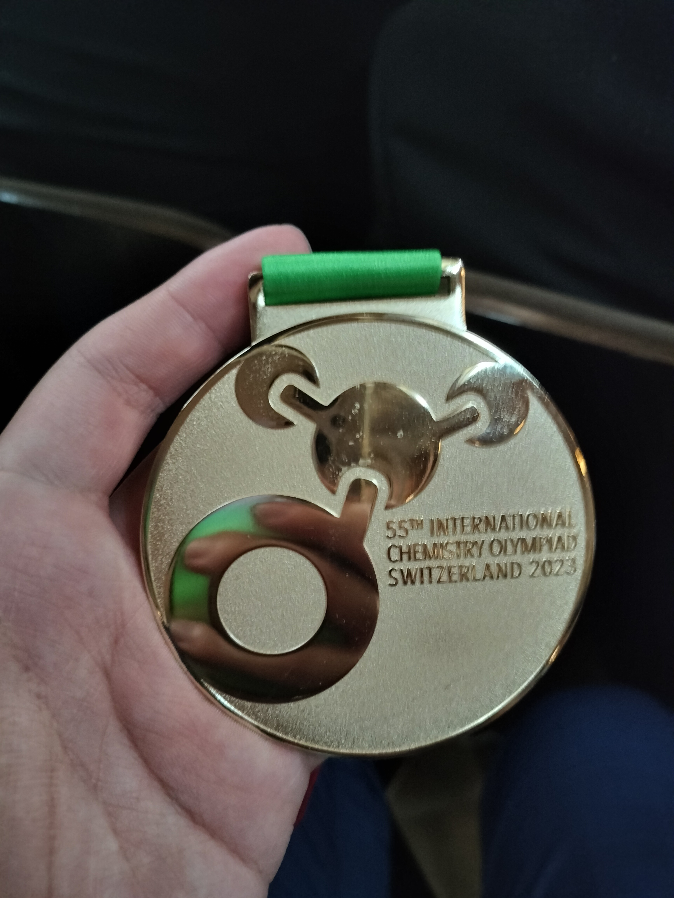

Yu Fan (Wesley) Chou
Hi, I'm Wesley.
I study Mathematical and Computer Sciences at Nanyang Technological University in Singapore.
I'm interested in software engineering, machine learning, and robotics. I like working through the details and building things to see how they work.
01 / About
My work so far includes a distributed banking system, a smartwatch app, and robot motion planning. I also work on machine learning for predicting chromatography retention at Vernus AI.
- Education
- B.Sc. in Mathematical and Computer Sciences
Double Major · NTU, Singapore · 2024–2028 - Languages
- Python, C++, C, Java, Go, SQL
- Tools
- PyTorch, scikit-learn, NumPy, pandas, pytest, Git, Linux
02 / Chemistry
Before IChO
I used to be a big chemistry nerd. I spent a lot of time studying chemistry and doing experiments.




Click a photo to view it full-size.
That interest eventually took me to the International Chemistry Olympiad.
03 / IChO 2023
International Chemistry Olympiad
In Grade 11, I represented Chinese Taipei at the 2023 International Chemistry Olympiad in Switzerland. I won a gold medal, placing 12th out of 348 contestants.
There, I met talented chemistry students from around the world and got to know a lot of great people.



Click a photo to view it full-size.
04 / Resume
Education, experience, projects, and technical skills.
The full resume is available as a PDF.